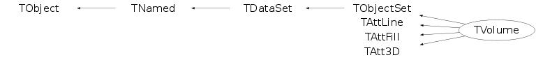

class TVolume: public TObjectSet, public TAttLine, public TAttFill, public TAtt3D
T V O L U M E description *- *-* ========================== - *-* A TVolume object is used to build the geometry hierarchy. *-* Since TVolume is derived from TDataSet class it may contain other volumes. - *-* A geometry volume has attributes: *-* - name and title *-* - pointer to the referenced shape (see TShape). *-* - list of TVolumePosition object defining the position of the nested volumes *-* with respect to the mother node. - - *-* A volume can be drawn. - *
Function Members (Methods)
public:
| TVolume() | |
| TVolume(TNode& node) | |
| TVolume(const TVolume&) | |
| TVolume(const char* name, const char* title, const char* shapename, Option_t* option = "") | |
| TVolume(const char* name, const char* title, TShape* shape, Option_t* option = "") | |
| virtual | ~TVolume() |
| void | TObject::AbstractMethod(const char* method) const |
| virtual void | Add(TShape* shape, Bool_t IsMaster = kFALSE) |
| virtual TVolumePosition* | Add(TVolume* node, Double_t x = 0, Double_t y = 0, Double_t z = 0, TRotMatrix* matrix = 0, UInt_t id = 0, Option_t* option = "") |
| virtual TVolumePosition* | Add(TVolume* node, Double_t x, Double_t y, Double_t z, const char* matrixname, UInt_t id = 0, Option_t* option = "") |
| virtual void | TDataSet::AddAt(TDataSet* dataset, Int_t idx = 0) |
| virtual void | TDataSet::AddAtAndExpand(TDataSet* dataset, Int_t idx = 0) |
| virtual void | TDataSet::AddFirst(TDataSet* dataset) |
| virtual void | TDataSet::AddLast(TDataSet* dataset) |
| virtual TObject* | TObjectSet::AddObject(TObject* obj, Bool_t makeOwner = kTRUE) |
| virtual void | TObject::AppendPad(Option_t* option = "") |
| TDataSet* | TDataSet::At(Int_t idx) const |
| virtual void | Browse(TBrowser* b) |
| static TClass* | Class() |
| virtual const char* | TObject::ClassName() const |
| virtual void | TNamed::Clear(Option_t* option = "") |
| virtual TObject* | TDataSet::Clone(const char* newname = "") const |
| virtual Int_t | TNamed::Compare(const TObject* obj) const |
| virtual void | TNamed::Copy(TObject& named) const |
| virtual TNode* | CreateTNode(const TVolumePosition* position = 0) |
| virtual void | TObjectSet::Delete(Option_t* opt = "") |
| virtual void | DeletePosition(TVolumePosition* position) |
| Int_t | TAttLine::DistancetoLine(Int_t px, Int_t py, Double_t xp1, Double_t yp1, Double_t xp2, Double_t yp2) |
| virtual Int_t | DistancetoPrimitive(Int_t px, Int_t py) |
| virtual Bool_t | TObjectSet::DoOwner(Bool_t done = kTRUE) |
| virtual void | Draw(Option_t* depth = "3")MENU |
| virtual void | TObject::DrawClass() constMENU |
| virtual TObject* | TObject::DrawClone(Option_t* option = "") constMENU |
| virtual void | DrawOnly(Option_t* option = "") |
| virtual void | TObject::Dump() constMENU |
| virtual void | TObject::Error(const char* method, const char* msgfmt) const |
| virtual void | TObject::Execute(const char* method, const char* params, Int_t* error = 0) |
| virtual void | TObject::Execute(TMethod* method, TObjArray* params, Int_t* error = 0) |
| virtual void | ExecuteEvent(Int_t event, Int_t px, Int_t py) |
| virtual void | TObject::Fatal(const char* method, const char* msgfmt) const |
| virtual void | TNamed::FillBuffer(char*& buffer) |
| virtual TDataSet* | TDataSet::Find(const char* path) const |
| virtual TDataSet* | TDataSet::FindByName(const char* name, const char* path = "", Option_t* opt = "") const |
| virtual TDataSet* | TDataSet::FindByPath(const char* path) const |
| virtual TDataSet* | TDataSet::FindByTitle(const char* title, const char* path = "", Option_t* opt = "") const |
| virtual TObject* | TDataSet::FindObject(const char* name) const |
| virtual TObject* | TDataSet::FindObject(const TObject* o) const |
| virtual TDataSet* | TDataSet::First() const |
| virtual TSeqCollection* | TDataSet::GetCollection() const |
| virtual Option_t* | TObject::GetDrawOption() const |
| static Long_t | TObject::GetDtorOnly() |
| virtual Color_t | TAttFill::GetFillColor() const |
| virtual Style_t | TAttFill::GetFillStyle() const |
| virtual const char* | TObject::GetIconName() const |
| static TRotMatrix* | GetIdentity() |
| virtual Color_t | TAttLine::GetLineColor() const |
| virtual Style_t | TAttLine::GetLineStyle() const |
| virtual Width_t | TAttLine::GetLineWidth() const |
| TList* | TDataSet::GetList() const |
| virtual TList* | GetListOfPositions() |
| TList* | GetListOfShapes() const |
| virtual Int_t | TDataSet::GetListSize() const |
| virtual void | GetLocalRange(Float_t* min, Float_t* max) |
| static TDataSet* | TDataSet::GetMainSet() |
| TObject* | TDataSet::GetMother() const |
| virtual const char* | TNamed::GetName() const |
| TObjArray* | TDataSet::GetObjArray() const |
| virtual TObject* | TObjectSet::GetObject() const |
| virtual char* | GetObjectInfo(Int_t px, Int_t py) const |
| static Bool_t | TObject::GetObjectStat() |
| virtual Option_t* | GetOption() const |
| virtual TDataSet* | TDataSet::GetParent() const |
| TShape* | GetShape() const |
| virtual const char* | TNamed::GetTitle() const |
| virtual UInt_t | TObject::GetUniqueID() const |
| virtual TVolume::ENodeSEEN | GetVisibility() const |
| virtual Bool_t | TObject::HandleTimer(TTimer* timer) |
| virtual Long_t | TObjectSet::HasData() const |
| virtual ULong_t | Hash() const |
| virtual void | ImportShapeAttributes() |
| virtual void | TObject::Info(const char* method, const char* msgfmt) const |
| virtual Bool_t | TObject::InheritsFrom(const char* classname) const |
| virtual Bool_t | TObject::InheritsFrom(const TClass* cl) const |
| virtual void | TObject::Inspect() constMENU |
| virtual TDataSet* | TObjectSet::Instance() const |
| static TObjectSet* | TObjectSet::instance() |
| void | TDataSet::InvertAllMarks()MENU |
| void | TObject::InvertBit(UInt_t f) |
| virtual Bool_t | Is3D() const |
| virtual TClass* | IsA() const |
| virtual Bool_t | TDataSet::IsEmpty() const |
| virtual Bool_t | TObject::IsEqual(const TObject* obj) const |
| virtual Bool_t | TDataSet::IsFolder() const |
| virtual Bool_t | IsMarked() const |
| Bool_t | TObject::IsOnHeap() const |
| virtual Bool_t | TObjectSet::IsOwner() const |
| virtual Bool_t | TNamed::IsSortable() const |
| virtual Bool_t | TDataSet::IsThisDir(const char* dirname, int len = -1, int ignorecase = 0) const |
| virtual Bool_t | TAttFill::IsTransparent() const |
| Bool_t | TObject::IsZombie() const |
| virtual TDataSet* | TDataSet::Last() const |
| virtual void | TDataSet::ls(Option_t* option = "") const |
| virtual void | TDataSet::ls(Int_t depth) const |
| static Int_t | MapGEANT2StNodeVis(Int_t vis) |
| static Int_t | MapStNode2GEANTVis(TVolume::ENodeSEEN vis) |
| void | TDataSet::Mark()MENU |
| void | TDataSet::Mark(UInt_t flag, TDataSet::EBitOpt reset = kSet) |
| void | TDataSet::MarkAll()MENU |
| void | TObject::MayNotUse(const char* method) const |
| virtual void | TAttLine::Modify() |
| virtual TDataSet* | TDataSet::Next() const |
| virtual TList* | Nodes() const |
| virtual Bool_t | TObject::Notify() |
| void | TObject::Obsolete(const char* method, const char* asOfVers, const char* removedFromVers) const |
| static void | TObject::operator delete(void* ptr) |
| static void | TObject::operator delete(void* ptr, void* vp) |
| static void | TObject::operator delete[](void* ptr) |
| static void | TObject::operator delete[](void* ptr, void* vp) |
| void* | TObject::operator new(size_t sz) |
| void* | TObject::operator new(size_t sz, void* vp) |
| void* | TObject::operator new[](size_t sz) |
| void* | TObject::operator new[](size_t sz, void* vp) |
| TNamed& | TNamed::operator=(const TNamed& rhs) |
| virtual void | Paint(Option_t* option = "") |
| virtual void | PaintShape(Option_t* option = "") |
| virtual TDataSet::EDataSetPass | TDataSet::Pass(void callback, Int_t depth = 0) |
| virtual TDataSet::EDataSetPass | TDataSet::Pass(void callback, void* user, Int_t depth = 0) |
| virtual TString | TDataSet::Path() const |
| virtual void | TObject::Pop() |
| virtual TDataSet* | TDataSet::Prev() const |
| virtual void | TNamed::Print(Option_t* option = "") const |
| virtual void | TDataSet::PrintContents(Option_t* opt = "") const |
| virtual Int_t | TDataSet::Purge(Option_t* opt = "") |
| virtual Int_t | TObject::Read(const char* name) |
| virtual void | TObject::RecursiveRemove(TObject* obj) |
| virtual void | TDataSet::Remove(TDataSet* set) |
| virtual TDataSet* | TDataSet::RemoveAt(Int_t idx) |
| virtual void | TAttFill::ResetAttFill(Option_t* option = "") |
| virtual void | TAttLine::ResetAttLine(Option_t* option = "") |
| void | TObject::ResetBit(UInt_t f) |
| virtual void | TObject::SaveAs(const char* filename = "", Option_t* option = "") constMENU |
| virtual void | TAttFill::SaveFillAttributes(ostream& out, const char* name, Int_t coldef = 1, Int_t stydef = 1001) |
| virtual void | TAttLine::SaveLineAttributes(ostream& out, const char* name, Int_t coldef = 1, Int_t stydef = 1, Int_t widdef = 1) |
| virtual void | TObject::SavePrimitive(ostream& out, Option_t* option = "") |
| void | TObject::SetBit(UInt_t f) |
| void | TObject::SetBit(UInt_t f, Bool_t set) |
| virtual void | TObject::SetDrawOption(Option_t* option = "")MENU |
| static void | TObject::SetDtorOnly(void* obj) |
| virtual void | TAttFill::SetFillAttributes()MENU |
| virtual void | TAttFill::SetFillColor(Color_t fcolor) |
| virtual void | TAttFill::SetFillStyle(Style_t fstyle) |
| virtual void | TAttLine::SetLineAttributes()MENU |
| virtual void | TAttLine::SetLineColor(Color_t lcolor) |
| virtual void | TAttLine::SetLineStyle(Style_t lstyle) |
| virtual void | TAttLine::SetLineWidth(Width_t lwidth) |
| virtual void | TDataSet::SetMother(TDataSet* parent = 0) |
| virtual void | TNamed::SetName(const char* name)MENU |
| virtual void | TNamed::SetNameTitle(const char* name, const char* title) |
| virtual void | TObjectSet::SetObject(TObject* obj) |
| virtual TObject* | TObjectSet::SetObject(TObject* obj, Bool_t makeOwner) |
| static void | TObject::SetObjectStat(Bool_t stat) |
| virtual void | TDataSet::SetParent(TDataSet* parent = 0) |
| virtual void | TNamed::SetTitle(const char* title = "")MENU |
| virtual void | TObject::SetUniqueID(UInt_t uid) |
| virtual void | SetVisibility(TVolume::ENodeSEEN vis = TVolume::kBothVisible)MENU |
| virtual void | TDataSet::SetWrite() |
| virtual void | ShowMembers(TMemberInspector& insp) |
| virtual void | TDataSet::Shunt(TDataSet* newParent = 0) |
| virtual Int_t | TNamed::Sizeof() const |
| virtual void | Sizeof3D() const |
| virtual void | TDataSet::Sort() |
| virtual void | Streamer(TBuffer& b) |
| void | StreamerNVirtual(TBuffer& b) |
| virtual void | TObject::SysError(const char* method, const char* msgfmt) const |
| Bool_t | TObject::TestBit(UInt_t f) const |
| Int_t | TObject::TestBits(UInt_t f) const |
| void | TDataSet::UnMark()MENU |
| void | TDataSet::UnMarkAll()MENU |
| virtual void | TDataSet::Update() |
| virtual void | TDataSet::Update(TDataSet* set, UInt_t opt = 0) |
| virtual void | TObject::UseCurrentStyle() |
| virtual void | TObject::Warning(const char* method, const char* msgfmt) const |
| virtual Int_t | TDataSet::Write(const char* name = 0, Int_t option = 0, Int_t bufsize = 0) |
| virtual Int_t | TDataSet::Write(const char* name = 0, Int_t option = 0, Int_t bufsize = 0) const |
protected:
| virtual void | Add(TDataSet* dataset) |
| virtual void | Add(TVolumePosition* position) |
| virtual TVolumePosition* | Add(TVolume* node, TVolumePosition* nodePosition) |
| void | TDataSet::AddMain(TDataSet* set) |
| virtual Int_t | DistancetoNodePrimitive(Int_t px, Int_t py, TVolumePosition* position = 0) |
| virtual void | TObject::DoError(int level, const char* location, const char* fmt, va_list va) const |
| TDataSet* | TDataSet::GetRealParent() |
| void | TDataSet::MakeCollection() |
| void | TObject::MakeZombie() |
| virtual void | PaintNodePosition(Option_t* option = "", TVolumePosition* postion = 0) |
| virtual void | TDataSet::SetMother(TObject* mother) |
| void | SetPositionsList(TList* list = 0) |
| static TDataSet::EDataSetPass | TDataSet::SortIt(TDataSet* ds) |
| static TDataSet::EDataSetPass | TDataSet::SortIt(TDataSet* ds, void* user) |
Data Members
public:
| enum ENodeSEEN { | kBothVisible | |
| kSonUnvisible | ||
| kThisUnvisible | ||
| kNoneVisible | ||
| }; | ||
| enum TObjectSet::EOwnerBits { | kIsOwner | |
| }; | ||
| enum TDataSet::EDataSetPass { | kContinue | |
| kPrune | ||
| kStop | ||
| kUp | ||
| kStruct | ||
| kAll | ||
| kRefs | ||
| kMarked | ||
| }; | ||
| enum TDataSet::ESetBits { | kMark | |
| kArray | ||
| }; | ||
| enum TDataSet::EBitOpt { | kSet | |
| kReset | ||
| }; | ||
| enum TObject::EStatusBits { | kCanDelete | |
| kMustCleanup | ||
| kObjInCanvas | ||
| kIsReferenced | ||
| kHasUUID | ||
| kCannotPick | ||
| kNoContextMenu | ||
| kInvalidObject | ||
| }; | ||
| enum TObject::[unnamed] { | kIsOnHeap | |
| kNotDeleted | ||
| kZombie | ||
| kBitMask | ||
| kSingleKey | ||
| kOverwrite | ||
| kWriteDelete | ||
| }; |
protected:
| Color_t | TAttFill::fFillColor | fill area color |
| Style_t | TAttFill::fFillStyle | fill area style |
| Color_t | TAttLine::fLineColor | line color |
| Style_t | TAttLine::fLineStyle | line style |
| Width_t | TAttLine::fLineWidth | line width |
| TSeqCollection* | TDataSet::fList | List of the the the objects included into this dataset |
| TList* | fListOfShapes | Pointer to the list of the shape definitions |
| TString | TNamed::fName | object identifier |
| TObject* | TObjectSet::fObj | TObject to be inserted |
| TString | fOption | List of options if any |
| TDataSet* | TDataSet::fParent | pointer to mother of the directory |
| TShape* | fShape | Pointer to the "master" shape definition |
| TString | TNamed::fTitle | object title |
| TVolume::ENodeSEEN | fVisibility | Visibility flag 00 - everything visible, |
| static TDataSet* | TDataSet::fgMainSet | pointer the main dataset; |
Class Charts
{kind=link}
{kind=link}
{kind=link}
{kind=link}

Function documentation
TVolume(const char* name, const char* title, const char* shapename, Option_t* option = "")
Volume normal constructor*-*-*-*- *-* ========================= - *-* name is the name of the node *-* title is title *-* shapename is the name of the referenced shape - -
TVolume(const char* name, const char* title, TShape* shape, Option_t* option = "")
Volume normal constructor *-* ================================ - *-* name is the name of the node *-* title is title *-* shape is the pointer to the shape definition - -
Int_t MapStNode2GEANTVis(TVolume::ENodeSEEN vis)
ENodeSEEN Visibility flag 00 - everything visible,
10 - this unvisible, but sons are visible
01 - this visible but sons
11 - neither this nor its sons are visible
Maps the value of the visibility flag to GEANT 3.21 "volume attributes"
Int_t MapGEANT2StNodeVis(Int_t vis)
TVolumePosition * Add(TVolume* node, Double_t x = 0, Double_t y = 0, Double_t z = 0, TRotMatrix* matrix = 0, UInt_t id = 0, Option_t* option = "")
- *-* volume the pointer to the volume to be placed *-* x,y,z are the offsets of the volume with respect to his mother *-* matrix is the pointer to the rotation matrix *-* id is a unique position id -
TVolumePosition * Add(TVolume* node, Double_t x, Double_t y, Double_t z, const char* matrixname, UInt_t id = 0, Option_t* option = "")
- *-* volume the pointer to the volume to be placed *-* x,y,z are the offsets of the volume with respect to his mother *-* matrixname is the name of the rotation matrix *-* id is a unique position id -
Int_t DistancetoNodePrimitive(Int_t px, Int_t py, TVolumePosition* position = 0)
-*-*-*Compute distance from point px,py to a TVolumeView *-* =========================================== *-* Compute the closest distance of approach from point px,py to the position of *-* this volume. *-* The distance is computed in pixels units. - *-* It is restricted by 2 levels of TVolumes - *
void Draw(Option_t* depth = "3")
-*-*-*-*-*-*-*-*Draw Referenced node with current parameters *-* =============================================
void DrawOnly(Option_t* option = "")
Draw only Sons of this node*-*-*- *-* ===========================
void ExecuteEvent(Int_t event, Int_t px, Int_t py)
-*-*-*-*-*-*-*Execute action corresponding to one event *-* ========================================= *-* This member function must be implemented to realize the action *-* corresponding to the mouse click on the object in the window *
void ImportShapeAttributes()
Copy shape attributes as node attributes*-*-*-*- *-* ========================================
void PaintNodePosition(Option_t* option = "", TVolumePosition* postion = 0)
-*-*-*-*-*-*-*-*Paint Referenced volume with current parameters *-* ============================================== - *-* vis = 1 (default) shape is drawn *-* vis = 0 shape is not drawn but its sons may be not drawn *-* vis = -1 shape is not drawn. Its sons are not drawn *-* vis = -2 shape is drawn. Its sons are not drawn - *
void PaintShape(Option_t* option = "")
void DeletePosition(TVolumePosition* position)
DeletePosition deletes the position of the TVolume *node from this TVolume and removes that volume from the list of the nodes of this TVolume
void GetLocalRange(Float_t* min, Float_t* max)
GetRange
Calculates the size of 3 box the volume occupies,
Return:
two floating point arrays with the bound of box
surroundind all shapes of this TVolumeView
void SetVisibility(TVolume::ENodeSEEN vis = TVolume::kBothVisible)
Set visibility for this volume and its sons*-*-*-*-
*-* =========================================
ENodeSEEN Visibility flag 00 - everything visible,
10 - this unvisible, but sons are visible
01 - this visible but sons
11 - neither this nor its sons are visible
-
*
void Sizeof3D() const
-*-*-*-*Return total size of this 3-D volume with its attributes *-* ==========================================================
TVolume()